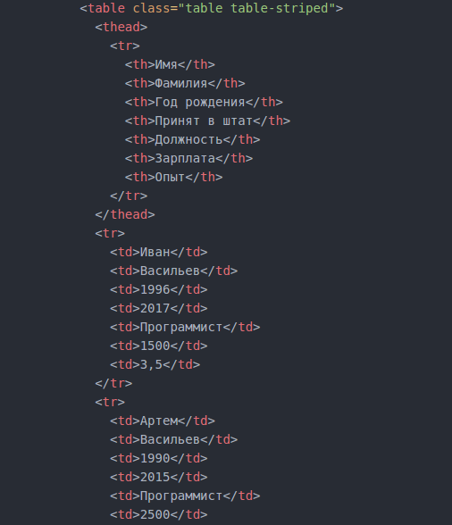

Как вывести таблицу профилей сотрудников
Задание
Есть данные по персоналу фирмы. Создать массив для хранения данных в php и вывести эти данные на екран в виде таблицы:

Шаг 1
Сначала определим как должен виглядить конечный HTML документ. Для таблици структура будет такой:
Шаг 2
Теперь создадим структуру данных. Каждый сотрудник будет массивом данных в котором ключем($key) будет обозначение типа данных, заначением($value) - величина. Например вот так:
[
"Имя"=>"Иван",
"Фамилия"=>"Васильев",
"Год_рождения"=>1996,
"Принят"=>2017,
"Должность"=>"Программист",
"Зарплата"=>1500,
"Опыт"=>3,5
]
Почему так? У нас все сотрудники имеют одинаковый тип данных, плюс так легче структурировать данные и делать выборки. Почему не используется простой масив? Потому что в нем нет гарантии целосности и порядка данных. Это означает что мы можем получать данные не в том порядке каком запланировали
Важный момент - в качестве значений ключей не принято использовать строки содержашие не латинские символы, по этому видоизменим наш исходный массив
[
"first_name"=>"Иван",
"last_name"=>"Васильев",
"born"=>1996,
"hired"=>2017,
"job"=>"Программист",
"salary"=>1500,
"experience"=>3,5
]
Шаг 3
Теперь построим итоговый массив данных, который будет содержать в себе данные всех сотрудников. Т.е. в "глобальый" массив "ПЕРСОНАЛ" вложим массивы с данными по каждому сотруднику. Схематическая структура будет такая:
[
["сотрудник_№1"],
["сотрудник_№2"],
["сотрудник_№3"],
...
["сотрудник_№8"],
]